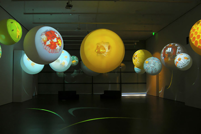

|
|||
Sound Art & Composition CV (with sound and reference links)
“Seeds of Life #3, #4 " Sound compositions for Fashion show and video sculpture installations by Katja Loher at The Middle House Hotel Shanghai, The Temple House Chengdu, China "Speculum GW170817" Data generated 3ch-directional-audio/visual installation as ephemeraltomorrow at Madatac X, Madrid, Spain and Finalist at NTU Global Digital Art Prize, Singapore “Bee Manifest” Sound composition of a performance and headphons sound installation for bee pavilion by Katja Loher at Nou Le Morene festival, Mauritius "Montagne video 9'" Sound compositions for Cinematography video installation by Julie Rocheau in a group exhibition diplômé.e.s 2018 du Master Photograph et Art Contemporain de l’Université Paris 8 "L'infini n'a lieu qu'une fois" at Mains d'Œuvres, Saint-Ouen, France 2018 "Where Does The Rainbow End?" Sound compositions for Dance performance at video installations by Katja Loher, Private opening of Art and Architecture Project at the new headquarter building of Swissgrid, Aarau, Switzerland "Speculum GW170817" Data genalated 3ch-directional-audio/visual installation as ephemeraltomorrow at 48 Stunden Neukölln - "Neue Echtheit", Berlin, Germany "Satellarium II" Realtime Data genalated quadraphonic-audio/visual installation as ephemeraltomorrow at Athens Digital Art Festival - Singularity Now Athens, Greece "Light
Cloud" 7.1-sorround-audio/OLED interactive Permanent
installation with Tamschick
Media+Space at Merck
Innovation Center, Darmstadt, Germany (Extracted
video and sounds) 2017 "Satellarium II" Sound composition/installation for Realtime audio/visual installation with 5.1 sorround sound, as ephemeraltomorrow at a group show by artburst - thank you for shareling, during the Artweek Berlin, Germany 3 suluptures, "Where Today Turns Into Tomorrow?", "What Do They Call The Flower That Flies From Bird To Bird?", "Can Pills Choose What Dream We Dream?" Sound composition for Katja Loher's exhibition at Art Miami Miami, U.S.A. Anya Tish Gallery Huston TX "Satellarium" Sound composition/installation for Realtime audio/visual installation, as ephemeraltomorrow at Blindsignal #3 Berlin, Germany
"Bee Manifesto" Sound compositions for videos by Katja Loher, exhibition at C-24 Gallery New York, U.S.A. "Satellarium"
Sound composition/installation for Realtime audio/visual
installation, as ephemeraltomorrow
2016 "Vuela Vuela" Sound composition for Katja Loher's exhibition at C-24 Gallery New York, NY, U.S.A. "T.A.U.T" 4CH Sound Prodution for Friedrich Hensen with interactive audio, neon lights and video installation as ephemeraltomorrow & the crews. Exhibited at BAUSCHULE '16 Stuttgart, Germany "Satellarium" Sound composition for interactive audio visual installation as ephemeraltomorrow. Exhibited Nell'Arena delle balle di paglia festival at Cotignola, Italy "#Digital Agora" Sound composition for interactive audio visual installation as ephemeraltomorrow. Exhibited at Audi Q2 #untaggable, Vienna, Austria 2015 "Bubbles (verre soufflé et vidéo)" Sound composition for Katja Loher's exhibition at Paris International digital week - Mi*Galerie Paris, France "Where Does Time Begin" Sound composition for Katja Loher's exhibition at Anya Tish Gallery Huston, TX, USA "My Name is Gregor' video simulation" Sound composition for interactive audio visual installation as ephemeraltomorrow "Oasis Lounge" Sound desgin for Katja Loher's exhibition at Airport Bogota, Colombia "Endangered Species" Sound desgin for Katja Loher's video sculpture exhibition at Telfair Museum, Savannah, Georgia, USA
2014 "Material Universe" Sound design & composition for Katja Loher's video in collaboration with Geoff Sobelle. Exhibited at BAM (Brooklyn Academy of Music) NY, USA "Video Portals" Sound composition for Katja Loher's video instalation at C-24 Gallery, NY, USA "VOLTA NY 2014" Sound composition for Katja Loher's video sculpture. Exhibited at C-24 Gallery, NY, USA "Video Planet Orchestra" 7 channel sound design for Katja Loher's video installation. Exhibited at Figge Art Museum Davenport, Iowa, USA
2013 "Miniverse" with Peter Sauerer, Art Museum Uri, Altdorf, Switzerland "Who Collects Clouds in the Sky?" Sound composition for Katja Loher's video sculpture. Exhibited at San Jose Museum of Art, CA, Anya Tish Gallery, Houston, TX, USA "Hiver" Live sound design for theatre play by Ex Vote A La Lune at Théâtre de l'Etoile du Nord, Paris, France
2012 "Interplanetary Constellations" Sound composition for Katja Loher's video sculptures. Exhibited at MuBE. Museu Brasileiro da Escultura. São Paulo, Brasil "To Whom Does THe Air Beling To?" Sound design for Katja Loher's video sculptures. Exhibited at 21c Museum Hotel Bentonville, AR USA, Galerie Andres Thalmann, Zürich Switzerland "Hiver" Sound design for multimedia theatre play by Ex Vote A La Lune. Residency, Primier at La Ferme du Buissonl. Paris, France
2011 "Time-Bubble" Sound design for Katja Loher's video sculpture starring Philip Glass. Exhibited at Lourdina Jean Rabieh Gallery, Sao Paulo, Brazil "Florentina"
Original sound track for film directed by Eva Pervolovici,
Paris "Multiverse" Sound design for Katja Loher's video sculptures. Exhibited at Anya Tish Gallery Houston, TX, USA
2010 "SCULPTING IN AIR Videoplanet" Sound design for Katja Loher's video sculptures. Exhibited at Galerie Andres Thalmann Zürich, Switzerland "Bubbles" Sound design for Katja Loher's video sculptures. Exhibited at Anya Tish Gallery Houston, TX, USA "Collapsoscope" Sound design for Katja Loher & Hans Focketyn's video sculptures. Exhibited at TINA B. at the Venice Biennale 2010 - 12th International Architecture Arsenale - Venezia, Italy "Hiver" Collaborate sound design and live sound performance for multimedia theatre play by Ex Vote A La Lune. Presentation showcased at Jeune Théatre National Paris, France
2009 "RGB Well" Sound design for Katja Loher's video sculptures. Exhibited at Buch 08, Literature Fair Basel, Instant Gallery Basel Switzerland, MIART | Milano Contemporary Art Fair,Galleria Tiziana Di Caro. Salerno Italy "Miniverse" Sound design for Katja Loher & Hans Focketyn's video sculptures. Exhibited at Siggraph Asia 2009 Art Gallery Yokohama, Japan and Anya Tish Gallery Houston, TX, USA, Art Verona "On stage" Verona, Italy and Biennale Chongqing, China "Videotellurium" Sound design for Katja Loher's video sculptures. Exhibited at TINA B - The Prague Contemporary Art Festival Prague, Czech and Galapagos Art Space Dumbo, NY, USA and Art 39 Basel Tony Wuethrich Gallery, Basel Swizterland "Schacherlinge" Sound design for Katja Loher's video performance at Galapagos Art Space Brooklyn - Dumbo, NY, USA
2008 "Orchestrated Incidence" Sound design for Katja Loher's video sculptures. Exhibited at Primacy Threshold Art Space, Perth, UK "Where Will the Stars Live" Sound design for Katja Loher's video sculpture. Installation & Live performance at Supreme Trading, Williamsburg New York and SUMMERTIME 08 - The Big Group Show, Galleri Christoffer Egelund, Denmark "A.I.R. ONE" Sound designs for Katja Loher's video object & installation at Substitut, Berlin, Germany and Anya Tish Gallery Houston, TX, USA
2007 "Rabbits on the Rainbow" 1 hour ambient music for online radio show, the somnambutone, Free103point9 NY, USA "Planêtre" Sound designs for Katja Loher & Julia Sørensen's VideoLaboratory. Exhibited at Scene 2 - Senones, France "Between
Sun and the Orange" Sound design for
Katja Loher's video sculpture. Solo Exhibition, Tony
Wuethrich Gallery Cabinet, Basel, Switzerland and Galapagos
Art Space, Brooklyn, NY, USA
2006 "Do I go Flying Without Wings and Feathers?"Original sound track for Katja Loher's video, later used in video sculptures. "Video
Optica" Sound design for Katja
Loher's video sculpture. Exhibited at Istanbul Contemporary
Art Fair Tershane
Gallery, Istanbul, Turkey and Alexander Clavel Stiftung Art
Award Villa
Wenkenhof, Riehen Swizterland. Designing audio logo/ring tone for Pay-pal, COMPOUND, NY 2005 "Floating
Rendezvous" Sound design for Katja
Loher's multimedia installation at The
State Hermitage Museum , St. Petersburg, Russia and Art
Digital 2005/
M'ARS Center of Contemporary Arts, Moscow,
Russia ↑ |
Extracted videos from
sound works:
#Digital Agora from ephemeraltomorrow
Venice
Biennale 2010 - 12th International Architecture
Arsenale Shortcut video loop by Maxime Lethelier
My Name is Gregor' video simulation Endangered Species video sculpture by Katja Loher Material Universe video sculpture by Katja Loher
Do I go Flying Without Wings and Feathers? video by Katja Loher
Why did the Bees leave? video by Katja Loher

|
||